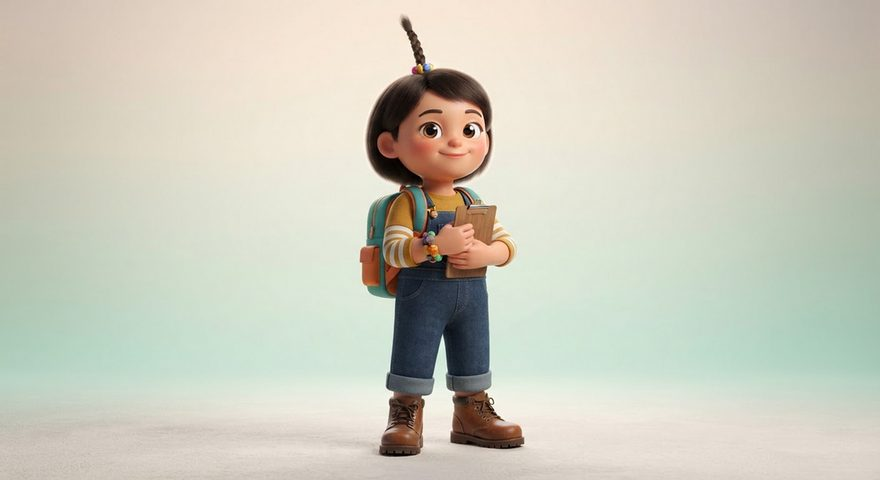
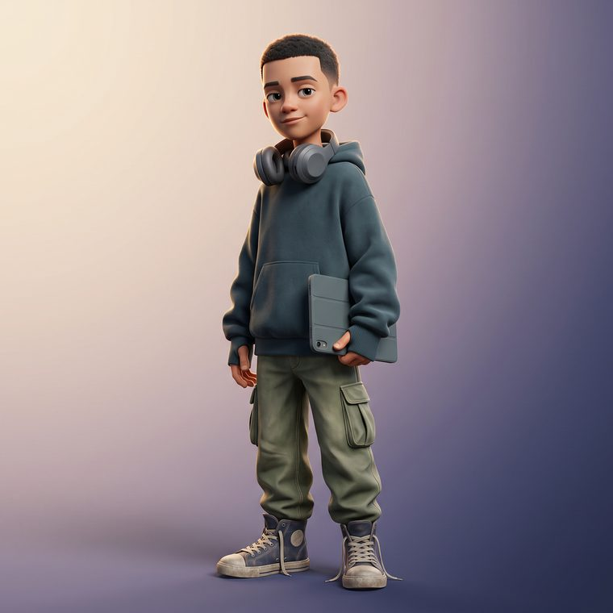

ВЫПУСК №12 Журнал программы «Гиб» · Неделя 12
Всё вместе: год в нескольких историях
Вебинар для родителей детей 5–13 лет · компетенция недели — отношение к ошибке · ≈ 13 минут
Методика «Гиб»: Злата Бабенко · разработка симулятора: Леонид Холматов
ПОВЕСТКА Что будет на этих 13 минутах
ДОСЬЕ Программа одной строкой
Проверяется по коду: каталог навыков и карт истории — lib/content/skills-catalog.ts (тест: 48 навыков, полное покрытие; 127 историй), события — lib/events/journal.ts, распределение 7 компетенций: саморегуляция 8 · отношения 8 · решения 8 · самопознание 7 · эмпатия 7 · творчество 5 · мышление роста 5.
КАРТА ГОДА Двенадцать тем родительской линейки
Структура: 12 тем по 3 занятия = 36 встреч в год; порядок нарастает от телесного («чувствую») к когнитивному («внимание», «память», «гибкость») и замыкается интеграцией («всё вместе»). Родитель видит свой выпуск в той же последовательности, что и ребёнок в продукте.
МЕХАНИКА Как устроено одно занятие
НЕДЕЛЯ 12 Что ребёнок делает в приложении
Друзья готовят праздник для игрушек. Какую роль выбрать?
Один участник попросил не повторять шутку. Что сделать?
Лиса зовут в новую игру. Что ответить на приглашение?
Друг строит башню и остановился. Что предложить?
Во что хочется играть позже. Какое занятие выбрать?
Фокус недели: планирование и рабочая память. Тексты дней сверены с программой (неделя 12, компетенция growth_mindset).
КОМПЕТЕНЦИЯ отношение к ошибке · planning · working_memory
«Это не экзамен за год: проверка одна — научился ли ребёнок пробовать.»
Удержать целое: месяц, история, навык — увидеть год как маршрут, а не как список.
Из сотен попыток собрать одну — «я могу пробовать» — и забрать её в следующий год.
ДОКАЗАТЕЛЬСТВА Что известно — и откуда цифры
SEL-программы дают ≈ +11 перцентилей успеваемости против контроля — измеримый, а не «климатический» эффект.
Детский самоконтроль — градиент, меняющий траекторию здоровья и благополучия на десятилетия вперёд.
«Я могу пробовать и ошибаться» — предиктор школьной динамики; неделя — проверка, что это срослось.
Durlak, J. A. et al. (2011). DOI 10.1111/j.1467-8624.2010.01564.x · Moffitt, T. E. et al. (2011). DOI 10.1073/pnas.1010076108 · Blackwell, L. S. et al. (2007). DOI 10.1111/j.1467-8624.2007.00995.x · SOURCES S1, S5, S4.
СИМВОЛ НЕДЕЛИ Всё вместе
Откройте наугад: «что в этой странице твоего года?»
ЧЕСТНЫЕ ГРАНИЦЫ Что «Гиб» не делает
Продукт — регистратор вовлечённости и поведения в сценариях: что выбрал, сколько паузил, сколько времени занял ответ. Оценки личности не выставляются.
Ни с другими детьми, ни с нормой возраста, ни с «как было в семье раньше». Награда одинакова за любой выбор.
Каждый выбор получает ту же награду; мы поощряем осмысленный выбор, а не угадывание «одобренного взрослыми» хода.
Ночные страхи, отказ от еды, смена настроения дольше двух недель, самоповреждение — повод к детскому психологу очно.
Проверяется по коду: lib/events/journal.ts — события без оценок личности; lib/engine/session.ts — любой выбор завершает сцену с равной наградой; паспорт исследования — docs/research-passport.md.
ПАСПОРТ Что продукт фиксирует на самом деле
| Событие | Что несёт | Что даёт |
|---|---|---|
| session_started | день, повтор, journey | факт начала занятия и возврата |
| story_selected | cardId, offerSize | какую историю и из скольких выбрал |
| story_answered | choiceIndex, itemCount | какой ход, из скольких вариантов |
| practice_answered | skipped | прошёл практику или отказался |
| task_answered | taskKind, taskSkill, ms | верность, помощь, время ответа |
| session_completed | steps, correct, stars, seconds | завершение дня и ритм прохождения |
| profile_created | band | линейка возраста |
Зачем нам это на вебинаре: это не «про науку», а про доверие: вы всегда знаете, что о вашем ребёнке известно программе — и чего она о нём принципиально не знает.
КАРТА 48 навыков · 7 компетенций
Распределение: саморегуляция 8 · отношения 8 · решения 8 · самопознание 7 · эмпатия 7 · творчество 5 · мышление роста 5. Один навык — ровно одна компетенция; проверено тестом согласования.
ЛИНЕЙКИ Возраст — не настройка, а другой мир
Медленные истории, короткие фразы. Опора — взрослый рядом. Акцент: телесные сигналы до слов.

Конфликт и договорённость: «вижу, что тебе обидно» вместо оценки — готовая модель фразы для жизни.

Выборы с последствиями, приватность как право, «пауза — навык, а не характер».
Тексты: одна ситуация программно размечена на три возрастных варианта; переключение внутри приложения, родитель видит отчёты своей линейки.
ОШИБКИ Три фразы, которые портят финал
Ребёнок слышит оценку, а не замечание пути; говорите о пробах, не о баллах.
Неправда: за этим годом — двенадцать недель проб; если бы ничего не было, вебинара бы не было.
Финальная неделя обесценивает годовое усилие одним «ну Машей и Сашей вот…».
Механизм под всеми тремя: оценка → страх → сравнение. Год — про траекторию и пробы, не про баллы.
ДОМА Три вещи, которые стоят вечера
Вместе пересмотреть то, что ребёнок сделал за год, — если интересно.
Обсудить, о чём была его любимая история.
Спросить, что из этого года хочется попробовать дома.
Заметка недели, написанная заранее: Завершающая неделя: приглашение, пауза, смена темы, участие в общем деле. Итог года без аттестации — вспомнить, что ребёнок пробовал.
ЧТО В РУКИ Практика недели · предметы
ВОПРОС Один вопрос — один ответ
«Что за этот год вспоминается ребёнку и что — вам?»
Без оценивания. «Да, конечно» — правильный ответ. «Нет» — правильный ответ. «Не знаю» — тоже ответ: он просто присматривается молча.
Слушайте ответ дольше, чем говорите в нём сами.
МИНИ-КЕЙС Смоделированный, но типичный
Стопка работ за год на столе. Папа: «Выбери одну свою вещь за год — я свою выберу». Десятилетний сын останавливается на кривой ракете из коробки от пылесоса: «Потому что я придумал это сам». Папа: «Тогда сохраним её дома». Никакой похвалы — только траектория, которую ребёнок назвал вслух.
Откуда: истории недели собраны по мотивам сценариев программы (неделя 12, отношение к ошибке); герои и детали вымышлены, паттерн — типичный.
ВОПРОСЫ Что обычно спрашивают про эту неделю
Мягче: «Что взял, даже если было тяжело?»; при глубокой грусти — к специалисту.
Молча листайте папку рядом; иногда рассказ приходит неделей позже на улице.
Обычный отдых; без «не забывай всё».
Обязательно: папка «Год-1» — капитальный маркер роста.
ДЕЙСТВИЕ Если взять только одно
Десять минут любого вечера недели. Без оценок, без подсказок. Вы рядом с чаем — не с проверкой. Всё остальное программа сделает сама.
Дальше по программе: дальше — лето без «не забывай всё»: просто отдых.
ЗАМЕРЫ Год в трёх точках
Почему не «до/после»: один цикл «60 дней» давал две точки и путал рост навыка с привыканием к игре. Три точки за год дают динамику без ложных обещаний — и ни одной цифры «уровня» в отчёте родителя.
ИСТОЧНИКИ Что мы можем доказать
Durlak, J. A., Weissberg, R. P., Dymnicki, A. B., Taylor, R. D., & Schellinger, K. B. (2011). DOI 10.1111/j.1467-8624.2010.01564.x
Moffitt, T. E., Arseneault, L., Belsky, D., et al. (2011). DOI 10.1073/pnas.1010076108
Blackwell, L. S., Trzesniewski, K. H., & Dweck, C. S. (2007). DOI 10.1111/j.1467-8624.2007.00995.x
Программа «Гиб»: 36 занятий · 12 тем · 60 историй × 3 линейки · 48 навыков · замеры сентябрь/январь/май. Документы: docs/research-passport.md · docs/skills-map.md · docs/program-year-design.md · lib/events/journal.ts
ФИНАЛ Гиб · Открытая мастерская
Не «вырастить чемпиона», а дать ребёнку язык для себя — годом, в 36 встречах, без оценок и без спешки.
дальше — лето без «не забывай всё»: просто отдых · пригласительная ссылка: [ССЫЛКА — впишите]